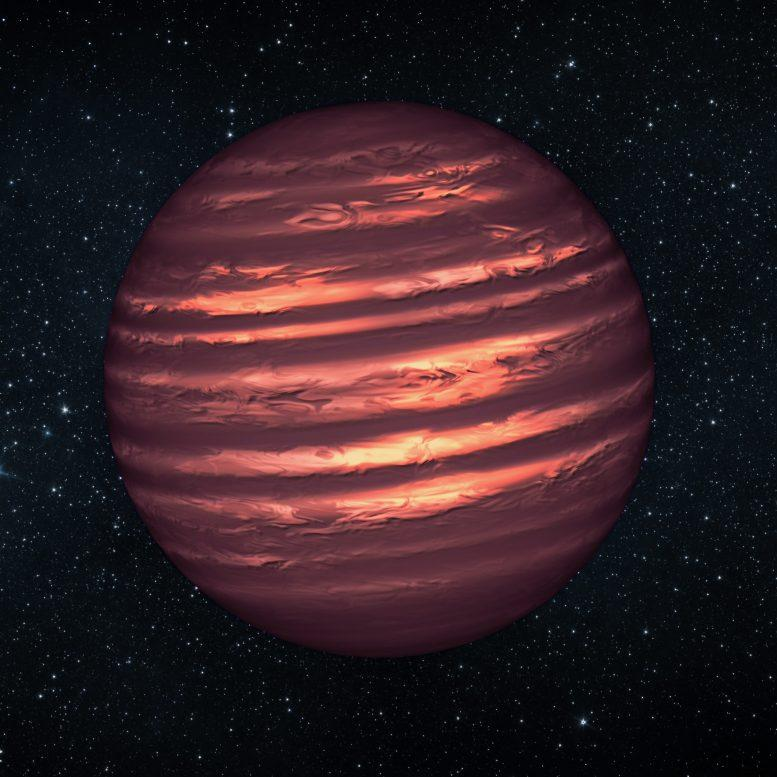
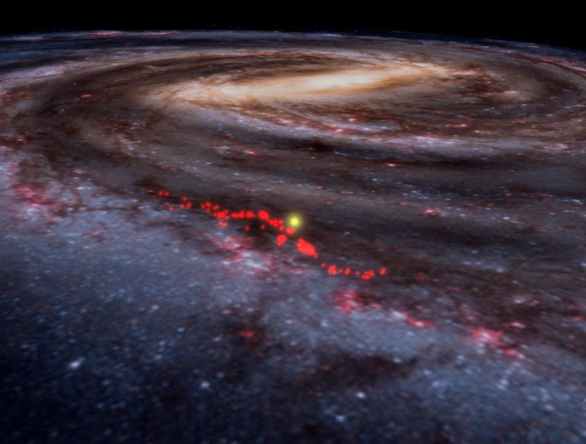

01 / GRAVITATIONAL LENSING
Quasar host galaxies through strong lensing
Using strongly lensed quasars to investigate the mass distribution of quasar host systems and the galaxies that surround them.
ASTROPHYSICS · RESEARCH & IDEAS
Exploring the universe across scales — from distant quasars and gravitational lenses to the atmospheres of substellar worlds and the dynamics of our galaxy.

01 — A LITTLE ABOUT ME
I’m an astrophysics researcher interested in how we can use observations and computational models to understand objects and structures across the universe.
My interests span gravitational lensing and quasars, brown dwarf atmospheres, and the evolution and dynamics of the Milky Way. I’m drawn to problems where careful physical reasoning meets modern data analysis.
Explore my research02 — RESEARCH & SELECTED WORK
Exploring questions across astrophysics, from distant quasars to the dynamics and evolution of our own galaxy.
Using strongly lensed quasars to investigate the mass distribution of quasar host systems and the galaxies that surround them.

Studying brown dwarf atmospheres through high-resolution spectroscopy, atmospheric models, and Bayesian retrieval methods.

Exploring how stars inherit the kinematics of their birth environments, and how their motions evolve as they move away from their natal molecular clouds.
03 — CONTACT
For research conversations, collaborations, or just to connect, feel free to reach out.
Send an email